Installation
We highly recommend using Blender 4.2 or higher!
This chapter is dedicated to the first installation of the addon. If you have already installed the addon and want to update it, you can go to the chapter Update The addon
Install the Addon
The installation of the addon (Core) depends on where you purchased it. Choose your method below.
Follow Method A if you purchased on SuperHive (Formerly BlenderMarket): Method A: SuperHive (Blender 4.2+)
Follow Method B if you purchased on Gumroad or other sources: Method B: Manual Zip (Gumroad or others)
Method A: SuperHive (Blender 4.2+)
{kind=link}
This method is for users who purchased on SuperHive and use Blender 4.2 or later. The new repository system simplifies both installation and future updates.
Installation From SuperHive
- Go to your SuperHive Order Page (make sure you are logged in):
- https://superhivemarket.com/account/orders
Drag and drop the addon from the order page directly into your Blender 4.2+ window.
Click Add Repository… when prompted (Skip if you already configured it in the past).
Set Api Token (Skip if you already configured it in the past).
Make sure to press Install from Extensions:
Ensure the addon is checked and activated in your Addons list.
{kind=link}
{kind=link}
{kind=link}
{kind=link}
{kind=link}
Method B: Manual Zip (Gumroad or others)
{kind=link}
This method is dedicated to those who purchased on Gumroad or prefer a manual installation.
Installation From Gumroad or other sources
Download the addon file from your order page: https://app.gumroad.com/library
{kind=link}
Important
The file must remain in zip format. Do not unzip it. If your browser automatically unzips the file, compress it again or use another browser.
Open Blender and drag the zip file directly into the Blender window.
Search for Extreme PBR in your installed addons list and mark the checkbox to activate it.
{kind=link}
{kind=link}
Install the addon library
If you have installed the addon correctly, now you can proceed with the installation of the library.
Step 1
The first step is to download all the .exapack files you want to install, my suggestion is to start by downloading:
XTRPbr_Procedural_Vol_001.exapack Very small file, contains only procedural materials
XTRPbr_05k_vol_001.exapack Small file, contains only the ½k files, previews, and data files
Save them somewhere, these will be deleted after installation.
Example of downloaded .exapack files:
{kind=link}
Step 2
When you have finished downloading the exapack files you want to install, go to the Extreme PBR Preferences window and go to the Install Libraries (TAB) section and press the “Default Library” button you see in the following image in red.
Tip
If you do not see the Extreme PBR Welcome panel, you can open it by pressing the “N” key on the keyboard.
{kind=link}
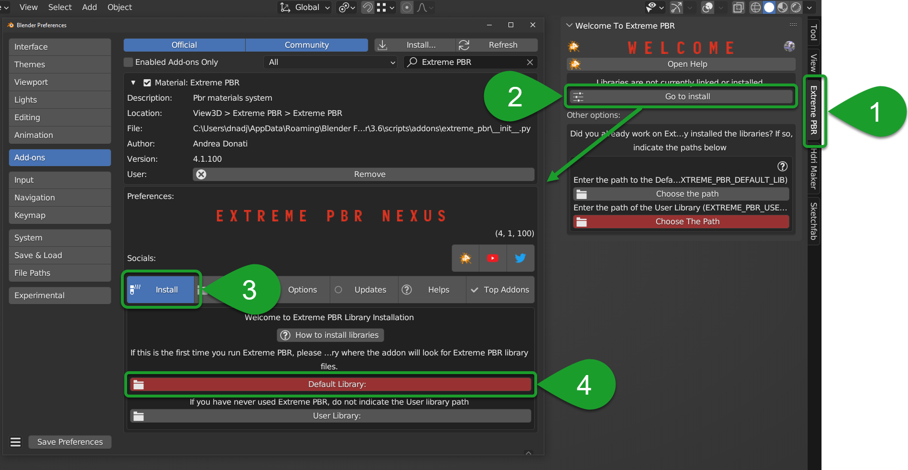
When you press button N.4, a file browser will open, you will have to choose a location on your computer where the root folder of the entire Default Library will be created
Warning
Do not choose the path in the path where blender installs the addons!
Avoid choosing paths on LAN connected disks, resources may not be reachable
If you are also installing the expansion.exapack, these will be installed in another root folder, in the same location where the Default Library is located
It is not recommended to use an external Hard Disk connected via USB (Unless it is an external SSD disk)
Step 3
Now the situation should look like this, where the “Choose Exapacks” button appears.
{kind=link}
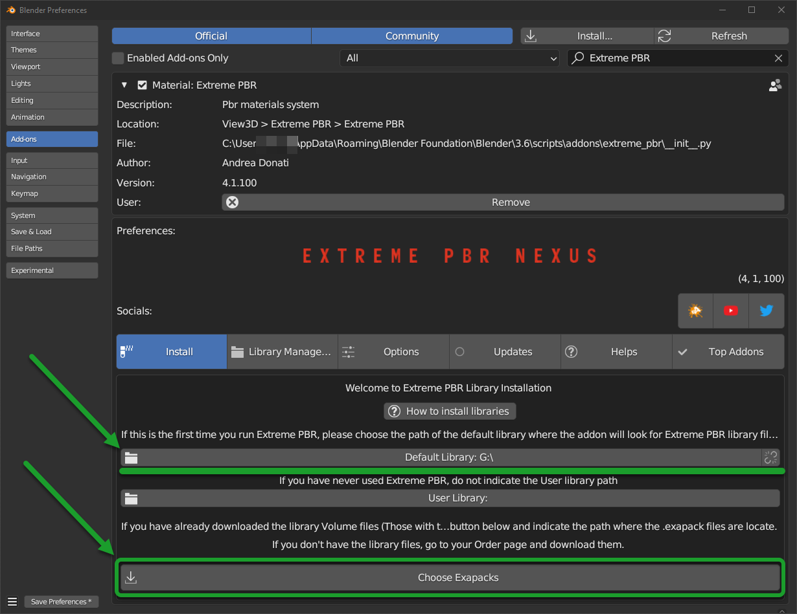
Press the “Choose Exapacks” button and select the .exapack files you just downloaded. You can choose them all, just make sure to select them within the File Browser. (The files not selected will be ignored) Then press the button in the file browser window Choose Exapacks to confirm
{kind=link}
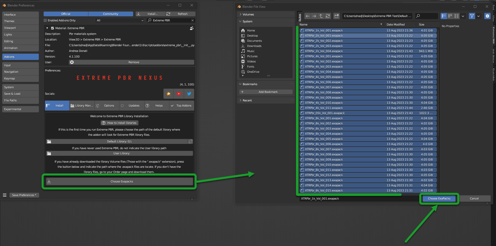
Step 4
Now you should have the list of exapack files selected, in list, ready to be installed, you will just have to press the “Install From Exapack Files” button to proceed with the installation. As follows in this image:
Note
The exapack files are deleted once installed by the addon, this is for space issues if you want to keep them (Not Recommended) check the “Keep Exapack After Install” box and the files will be kept on the disk. But be careful, this means that you will have the weight of the library almost X2
{kind=link}
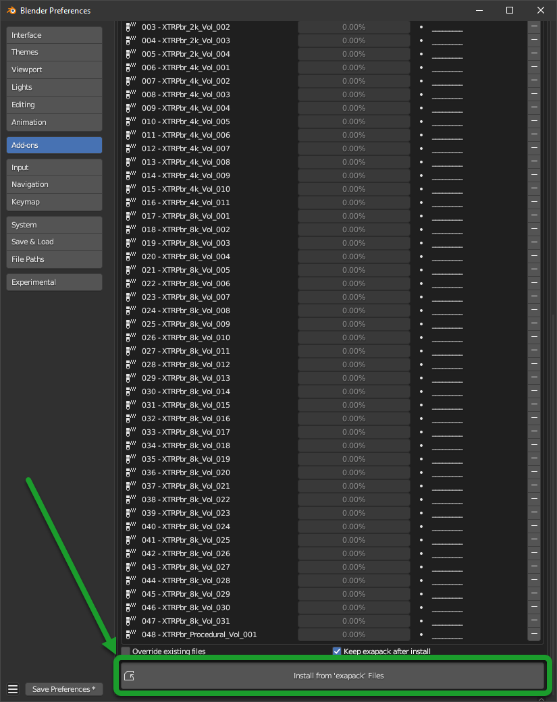
Attention
For some reason, it could happen that the .exapack file is corrupted. The addon recognizes corrupted files and reports them in red. Download the file again, in the meantime you can remove it from the list and proceed anyway to the installation, you can also install it later using this same procedure.
{kind=link}
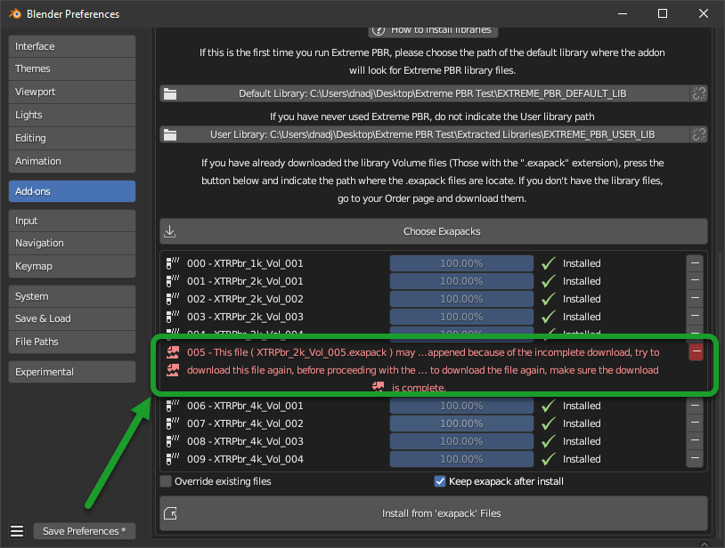
During the installation process of the .exapack packages, the interface will show the progress of the installed packages You can also stop the process whenever you want (Just press the button (X) next to the big status bar) in this case, the installed packages will remain installed.
Important
I want to emphasize: All installed packages will remain installed, even if the installation process is interrupted. If the installation is resumed, the installation process will resume from where it was interrupted, because the addon recognizes the already installed files and skips them.
{kind=link}
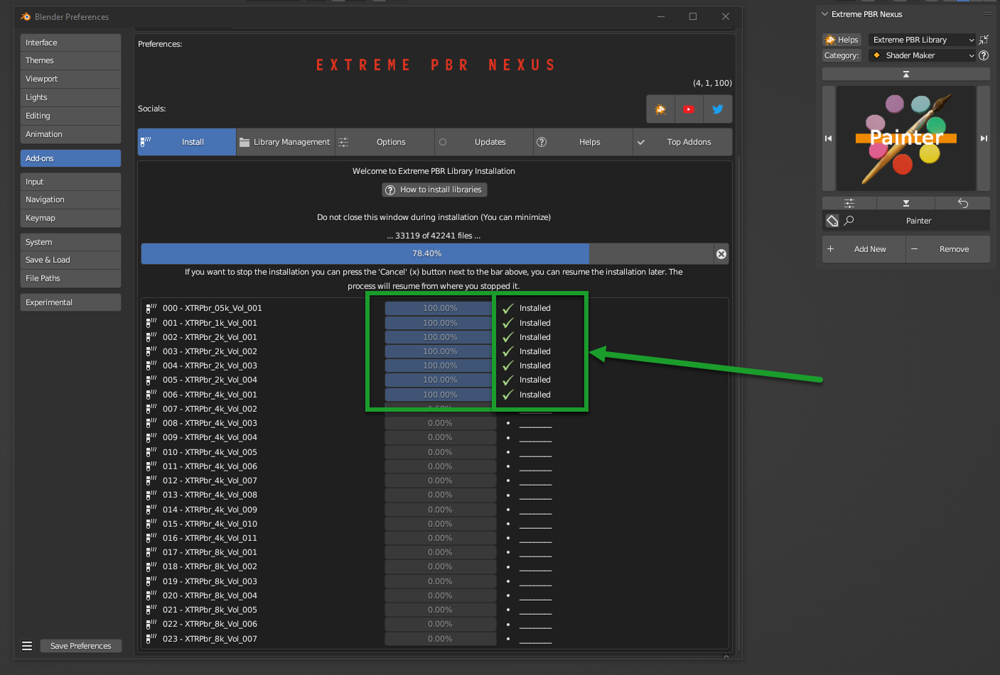
Note
The installation speed depends a lot on the type of disk in use, I have done various tests, and the installation on SSD is very fast. I do not recommend the use of an external Mechanical Hard Disk connected via USB only for time issues, I noticed that these disks are very slow for this process. But if you do not have time problems and you have patience, you can decide to use it.
Step 5
When you have completed the entire (or even just in part) installation, the addon will be ready to be used.
{kind=link}
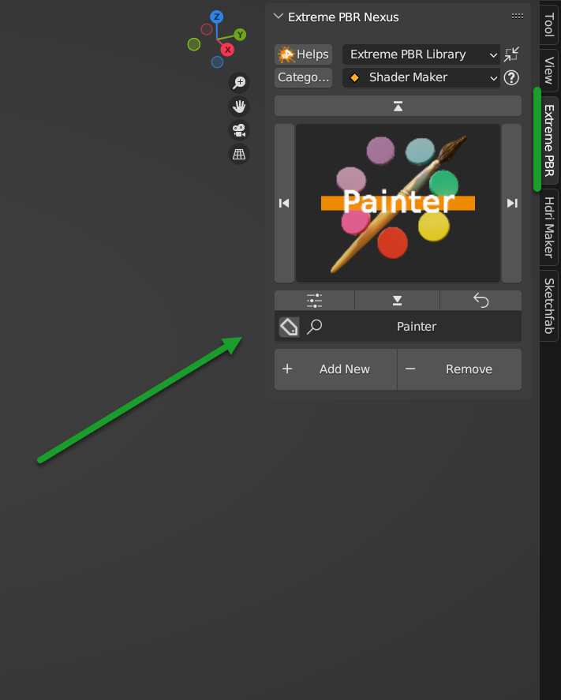
Note
The ½k, 1k, 2k, 4k, 8k versions are present in the complete edition. Some versions may not contain all the resolution versions. If you want to upgrade to the full version, you only pay the difference
At the end of this process, on your computer, in the indicated path, 2 folders will have been created
EXTREME_PBR_DEFAULT_LIB (This folder contains all the files of the Extreme PBR libraries)
EXTREME_PBR_USER_LIB (This folder is an empty folder, and will be used in case you want to save your personal HDRi)
To manipulate the paths to the libraries, it is enough to go to the Extreme PBR settings and go to the Libraries (TAB) section
For more information on this section you can find the chapter Libraries
{kind=link}
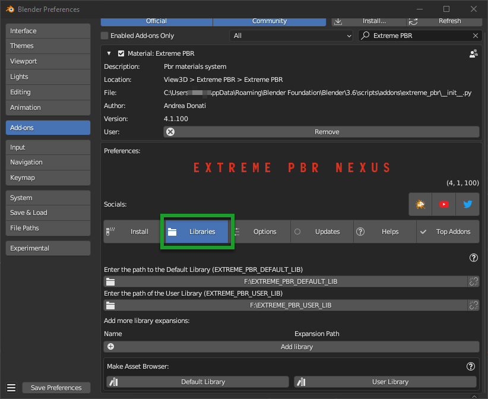
Remove Exapack From Installer
These buttons allow you to remove the .exapack files so that you do not have to install them in case you have added a file by mistake or do not want to install a particular file.
{kind=link}
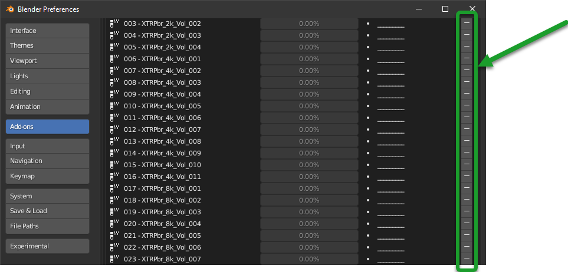
About Exapack
As for the libraries, from version 3.0.100 onwards, they will be distributed in the form of exapack packages. All new packages will be in the form of numbered volumes Here is an example of nomenclature
Default Library
XTRPbr_05k_vol_1.exapack: Contains files from ½k, previews, and data files
XTRPbr_1k_vol_1.exapack: Contains files from 1k, previews, and data files
XTRPbr_2k_vol_1.exapack: Contains files from 2k, previews, and data files
XTRPbr_4k_vol_1.exapack: Contains files from 4k, previews, and data files
XTRPbr_8k_vol_1.exapack: Contains files from 8k, previews, and data files
XTRPbr_Procedural_Vol_1.exapack: Contains procedural files, previews, and data files
The packages are consecutive, Vol_1, Vol_2, Vol_3, I tried to limit as much as possible the size of the packages, so that their maximum is around 4GB (Some can reach 4.3GB). This limit to avoid download and installation problems, since those who have a slower connection, could encounter timeout problems.
Note
The large size packages like 4k, 8k will have more volumes, because they are much larger. The small size packages like ½k, 1k, 2k will have fewer volumes, because they are much smaller.
The .exapack files are installed by the addon, they do not need to be installed manually! After installing the Extreme PBR addon, it will manage your exapack packages and install them. (You will see in the following steps)
Important
For Mac users: it often happens that Safari Browser is set to decompress .zip files, make sure this does not happen, otherwise the .zip file will no longer be a .zip file and you will not be able to install the addon as follows.
Just go to the Safari menu bar at the top left and click on Safari>Preferences, then remove the check mark from “Open safe files after download” in the “General” window. Done, if in the future you download zipped files with safari, they will no longer be unzipped.
Bundle Installation SuperHive
This step is only necessary if you purchased the Bundle Version of Extreme PBR on SuperHive (Formerly BlenderMarket)
{kind=link}
Download the 3 zip files named XPBR_Part_1.zip, XPBR_Part_2.zip and XPBR_Part_3.zip
Extract all 3 zip files into a folder of your choice
Proceed with the classic installation of the addon as explained below
{kind=link}
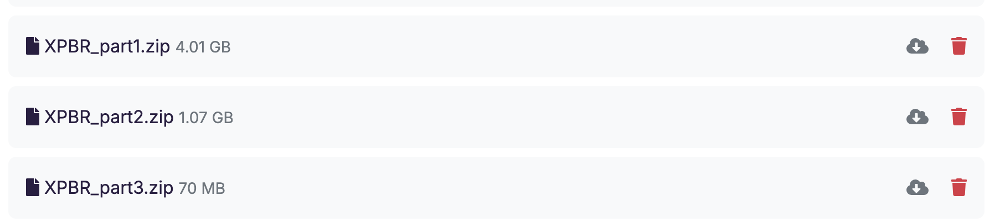
Once unzipped you should have these files as you see in the image:
{kind=link}
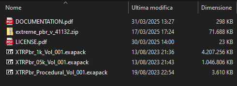
You can now proceed with the installation of the addon as explained in the next chapter